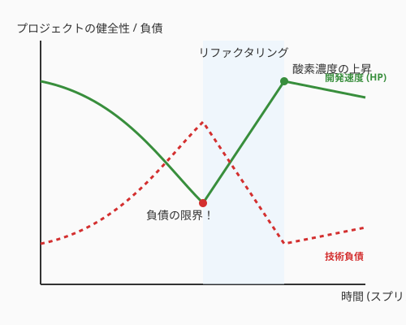

ソフトウェア開発において、最も長く、最も奥深い旅路。それは「メンテナンス」です。 納期に追われて書いた急ごしらえのコード、一時的な回避策、古くなったライブラリ...これらは「技術的負債（Technical Debt）」として積み重なり、利子（開発速度の低下）を要求し続けます。

多くのエンジニアにとって、負債の返済（リファクタリング）は「やらなきゃいけないけど、面倒で評価されない仕事」になりがちです。しかし、私たちは「楽しむ」ためにここにいます。
このセクションでは、地道な借金返済を、モンスターを倒し経験値を得る「RPG（ロールプレイングゲーム）」へと変えるマインドセットと、AIという「鑑定眼」を武器にした現代のリファクタリング術を紹介します。
すべての負債が悪というわけではありません。Ward Cunninghamが提唱した「技術的負債」の概念を、魔導のタイプ別に分類してみましょう。
| 種類 | 状態 | 特徴（魔法のメタファー） |
|---|---|---|
| 無謀・意図的 | 「禁忌の魔術」 | 「動けばいい」と確信犯的に汚いコードを書く。後で大爆発する。 |
| 慎重・意図的 | 「戦略的供物」 | 「今はリリースを優先し、来月に再設計する」という苦渋の決断。 |
| 無謀・無意識 | 「暴走した魔力」 | 設計の原則を知らず、結果としてカオスを生み出す。 |
| 慎重・無意識 | 「古びた知識」 | 実装時はベストだったが、技術の進歩や要件の変化で最適ではなくなった。 |
大切なのは、今目の前にある負債がどの「呪い」に相当するかを正しく識別することです。
かつての戦士たちは、戦いから戻るたびに、自分の武器の欠けを「一箇所だけ」研いでおく習慣を持っていました。
「戦い終わるごとに、砥石を一度だけ当てる」
これをコードに適用しましょう。 大規模な「リファクタリングの祭典」という特別な時間を設ける必要はありません。機能追加やバグ修正という冒険から帰還するたびに、ついでにコードという武器を「ほんの少しだけ」研いでおくのです。
この「一振りの砥石」の積み重ねが、次なる強敵（複雑な新機能要求）が現れた時に、あなたの剣（コード）を鋭く保ち、一撃で問題を解決する力となります。
見えない敵は脅威ですが、数値化された敵はただのターゲットです。コードの「不健康さ」をステータスとして可視化しましょう。
コード中に TODO や FIXME を残す際、具体的な「討伐難易度」を記述します。
# FIXME: モンスターLv.5 - ネストが深すぎるのでGuard Clauseで平坦化する
# TODO: モンスターLv.2 - マジックナンバー '300' を定数化するAIや静的解析ツールを使って、コードの複雑さを算出します。代表的なメトリクスをゲームのステータスに例えて見てみましょう。
| メトリクス | 魔法名 | 何を測るか | 要注意の閾値 |
|---|---|---|---|
| 循環複雑度 | 「迷宮の複雑度」 | 条件分岐の数（独立した経路の数） | 関数あたり > 10 |
| 認知的複雑度 | 「脳への呪詛」 | 読む人の理解コスト（ネストで加算） | 関数あたり > 15 |
| 関数の行数 | 「術式の重み」 | 1つの関数の長さ | > 20行 |
| 重複コード率 | 「コピー魔法の残滓」 | コードの繰り返し（DRY違反） | > 5% |
| 結合度 | 「縛りの鎖」 | 他モジュールへの依存の多さ | 文脈による |
1976年にThomas McCabeが提唱した指標で、コードの中にある「分岐の数 + 1」で計算します。
# 循環複雑度 = 3（if が2つ）
def calculate_quest_reward(quest, hero):
reward = quest.base_xp
if quest.difficulty == "HARD": # +1
reward *= 2
if hero.streak_days >= 7: # +1
reward += 50
return reward分岐が10を超えると「テストケースが10通り以上必要な関数」になります。バグが潜みやすく、テストが不完全になりがちです。Pythonなら radon で測定できます。
pip install radon
radon cc src/ -a -s
# F src/domain/quest.py:42 calculate_quest_reward - A (2)
# ^ ファイル 行番号 関数名 グレード スコアグレードはA（1–5）からF（26+）まで。CとD（10超）が出始めたら、関数の分割を検討するサインです。
SonarSourceのG. Campbell（2018年）が提唱した、より「人間感覚」に近い指標です。循環複雑度と違い、ネストが深いほどペナルティが大きくなります。
# 認知的複雑度の計算イメージ
def process(quests):
for quest in quests: # +1（ループ）
if quest.is_active: # +2（if、ネスト1）
if quest.is_hard: # +3（if、ネスト2）
apply_bonus()「同じ行数でも、浅いコードの方が読みやすい」という直感が数値に反映されます。SonarQubeのデフォルト閾値は15で、これを超えると警告が出ます。
最もシンプルで、最も効果的な指標の一つです。1つの関数が何行かを数えるだけ。
「1関数は20行以内」が広く言われる目安ですが、行数はあくまで「臭いを嗅ぎ取るための入口」です。長い関数は往々にして「一つの関数が複数の仕事をしている」サインです。3.3節で学んだ「関数の単一責任」の原則に照らし合わせて判断しましょう。
同じ、または酷似したコードが複数箇所に存在する割合です。DRY原則（Don't Repeat Yourself）の違反を定量化します。
# Python: pylint --disable=all --enable=duplicate-code
# JavaScript: jscpd --min-lines 5 src/重複が5%を超えたら「コピー魔法の残滓」が溜まり始めているサイン。どちらか一方のバグを直しても、もう一方に同じバグが残ります。
あるモジュールが「他のどれだけのモジュールに依存しているか（流出結合度: Ce）」と、「他のどれだけのモジュールから依存されているか（流入結合度: Ca）」を測ります。
不安定度 = Ce / (Ca + Ce)
0に近い → 安定（多くに依存される、変更コストが高い）
1に近い → 不安定（多くに依存する、変更の影響を受けやすい）QuestForgeの domain/ は多くの層から依存される「コア」なので、不安定度は低く（安定して）あるべきです。逆に infrastructure/ は不安定で構いません。
メトリクスの黄金律: 数字を「目標」にするのは本末転倒です。循環複雑度を下げるために if を消してネストにしたり、行数を減らすために意味のない行を詰めたりするのは逆効果です。メトリクスは「どこが痛いか」を教えてくれる体温計。治療するのはコードの設計であって、体温計の数字ではありません。
「この関数の認知的複雑度は18——はぐれメタル級の強敵だ！」という共通言語を持つことで、リファクタリングはチーム共有の「クエスト」に変わります。
AI時代のリファクタリングにおける最大の武器は、AIを「考古学者」として使うことです。
意味不明なスパゲッティコードを見つけたとき、AIに「このコードの意図を要約し、データの流れを可視化して」と頼みます。AIは、数年前の自分（または他人）が残した「古文書」の解釈を助けてくれます。
「このコードをSOLID原則に基いてリファクタリングしたい。影響範囲を最小限にするための5つのステップを提案して」と詠唱します。AIは、安全にコードを磨き上げるための「攻略チャート」を作成してくれます。
テストコードの一行もない、古文書のような「レガシーコード」に挑む際の鉄則は一つです。 「触る前に、防具（テスト）を装備せよ」（第4章で学んだ守護魔法が、ここで活きます）。
| 呪文名 | 正式名称 | 効果 |
|---|---|---|
| スピリット・スプリット | メソッドの抽出 | 巨大な関数から、一部の処理を独立した関数へ切り出す。 |
| ソウル・トランスファー | メソッドの移動 | あるクラスにあるメソッドを、より適切なデータを持つ別のクラスへ移す。 |
| トゥルー・ネーミング | 変数の改名 | 意味の曖昧な変数に、その役割を完璧に表す名前を与える。 |
| インライン・アセンブル | メソッドのインライン化 | 逆に細切れすぎて分かりにくい関数を、呼び出し元に統合する。 |
技術的負債という言葉はネガティブですが、見方を変えれば、それは「未来の自分たちへの投資のチャンス」です。
リファクタリングを通じて、コードだけでなく、あなた自身とチームもレベルアップしていく。汚いコードを見つけた時、こう思えるようになれば、あなたは一流のアルケミストです。
「おっ、あそこに経験値の塊（はぐれメタル）がいるぞ」と。
@application/use_cases/complete_quest.py を読んで、
技術的負債の観点から以下を行ってください：
1. コードの「呪い」を特定
- 循環複雑度が高い関数（分岐が多すぎる箇所）
- 認知的複雑度が高い箇所（ネストが深い、条件式が複雑）
- 重複しているロジック
2. 優先度順に3つの「クエスト（リファクタリングタスク）」を提案
（難易度・影響範囲・期待効果を添えて）
3. 最も優先度の高い1つについて、動作を変えずにリファクタリングしてください。
既存のテストが通ることを確認しながら進めてください。sample-code/questforge/ のコードベース全体を走査して、
技術負債の可視化レポートを作成してください。
出力：
1. メトリクスの危険地帯（上位3件）
- 循環複雑度が最も高い関数
- 行数が最も長いクラス・関数
- 重複が疑われる箇所
2. 「今すぐ直せる小さな負債」3件
（変数名の改善、マジックナンバーの定数化、不要なコメントの削除など）
3. 1件だけ実際にリファクタリングを実施し、
変更前後のコードと「何がどう改善されたか」を説明してください。